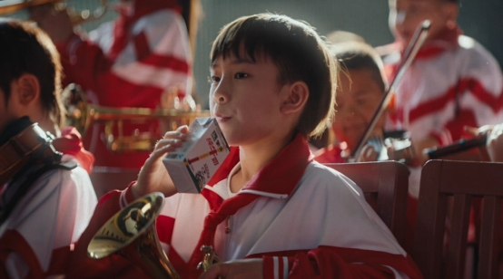
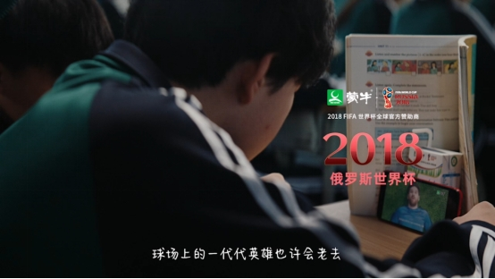
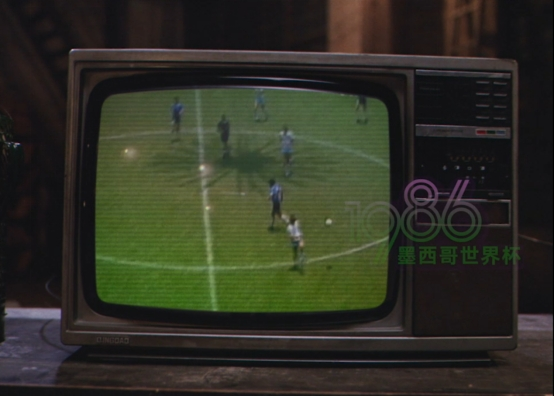

案例发生了什么



五四青年节期间，蒙牛与海信推出《青春不过几届世界杯 2.0》，以 1978—2026 的观赛记忆串联收音机、老电视、家庭客厅、校园与当代年轻人。影片中的旧电视道具由海信提供，蒙牛负责营养与“要强”的情绪线，双方没有简单并排 Logo，而是共同拥有“家庭如何看世界杯”这一生活史。
MARKETING KNOWLEDGE ROUTER · 营销知识路由器
营销启发卡
用三张卡片保留最值得记住、讨论和迁移的部分。 卡片底部按主题连接全站相关案例、经典方法与深度文章。
核心动作
以 48 年世界杯时间线代替单届赛程信息，让不同年龄球迷都有进入点；用收音机、老式海信电视、校园和家庭场景将抽象代际记忆变成具体物件。
传播与商业机制
以“中国赞助商共创 / 代际回忆片”为资源起点，进入长片、社交切片、双方账号、电视终端与零售触点；结果优先观察完播、跨账号触达、品牌关联、搜索与套系/产品转化，不把曝光直接等同于销售。
可复用的方法
品牌联动的共同点不应只来自“都是中国赞助商”，而应来自双方共同影响过的真实生活场景。
适用条件、风险与证据
- 先明确目标是国内动销、出海认知、渠道关系还是授权商品，而不是全部都做。
- 球星或球队的赛果只是放大器，必须准备常态内容和转化出口。
- 对授权范围、地域、肖像和商品库存建立可追溯台账。
核验记录可将已核动作作为内部判断基础；涉及投放规模、销售结果或合作细则时，仍应以品牌、平台或权利方的一手发布为准。 当前记录：已核（蒙牛官网）；素材状态：已归档 4 张官方影片画面。
品牌与权威来源物料
这里只展示可追溯到品牌、权利方、官方账号或明确注明原始出处的真实物料；研究图卡不计入案例图片。

资料与来源
官方资料、结果数据与下一步
已验证事实
- 蒙牛官网 2026 年 5 月 7 日转载新华社报道，确认五四期间发布《青春不过几届世界杯 2.0》，以 1978—2026、跨越 48 年的世界杯记忆为主线。
- 官方页面明确提到影片中的老收音机、老电视等道具，其中海信提供老电视资源，双方形成“营养 + 科技”的共创。
- 本页 4 张图片均取自该官方页面，包括主视觉、校园、2018 时间节点和 1986 老电视场景。
可追溯的结果
- 官方页面称影片在全网引发回忆讨论，但未给出可复核的去重播放、完播、品牌联想或跨账号增量数据。
原始来源
来源链接优先指向品牌、权利方或持权媒体官方页面；品牌自述数据按原始定义记录，不视作独立审计结果。